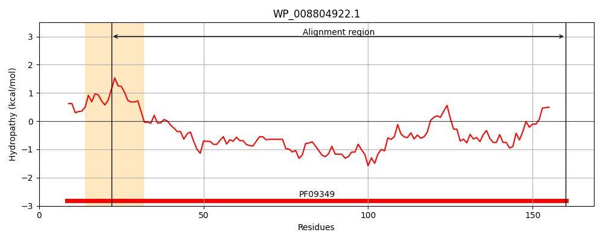
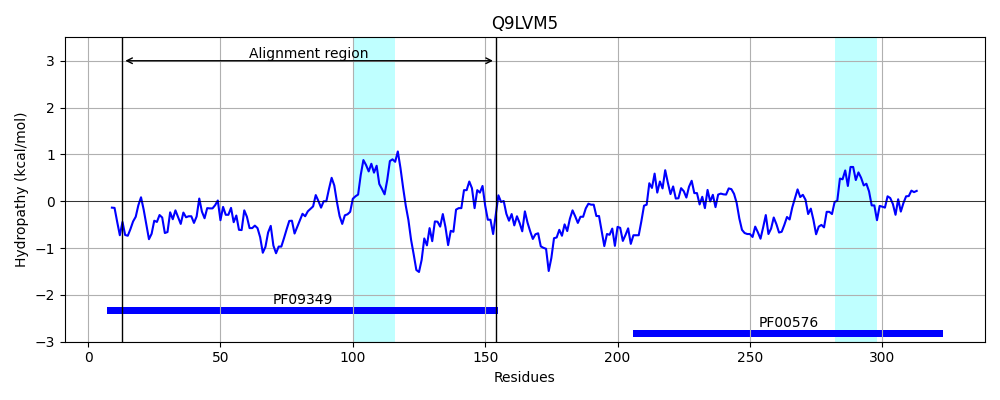
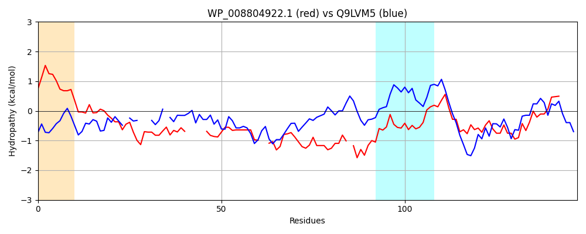

Hit Accession: Q9LVM5
Hit TCID: 9.B.35.1.3
Hit Description: gnl|BL_ORD_ID|18551 gnl|TC-DB|Q9LVM5|9.B.35.1.3 Uric acid degradation bifunctional protein TTL OS=Arabidopsis thaliana GN=TTL PE=1 SV=1
Mach Len: 147
e:0.000000
Query TMS Count : 1
Hit TMS Count: 2
TMS-Overlap Score: 0.000000
Predicted Substrates:None
BLAST Alignment:
Score: 120 , Bit scores: 50 bits, E-value: 4.2e-08, Alignment length: 147, Percentage identity: 31
Query: 22 CVAIPAWGETLVNLRPFASRHALLQTAREAMDYWGEDELNA-----ALSAHPRIGEKPTGG--QAHAALSRQEQSAVDSENERLA-QALQEGNARYEARFGRVFLIRAKGRSGEAILQALTRRLQHTADEEVTEALAQLREITMLRL 160
C + + + P S+ A+ TAR D W +++N A SAHP+IG P+ A S EQS + A Q L E N Y+ +FG +F+I A GR+ +L AL R ++ E+ A + +IT LR+
Sbjct: 13 CCGSSEFAKQMSTSGPLTSQEAIY-TAR---DIWF-NQVNVTDWLEAFSAHPQIGNTPSPSINSDFARRSVSEQSTAFATTSASALQELAEWNVLYKKKFGFIFIICASGRTHAEMLHALKERYENRPIVELEIAAMEQMKITELRM 154 | Protein Hydropathy Plots: |
|---|
|  |  |
Pairwise Alignment-Hydropathy Plot:
|
|---|
|  |